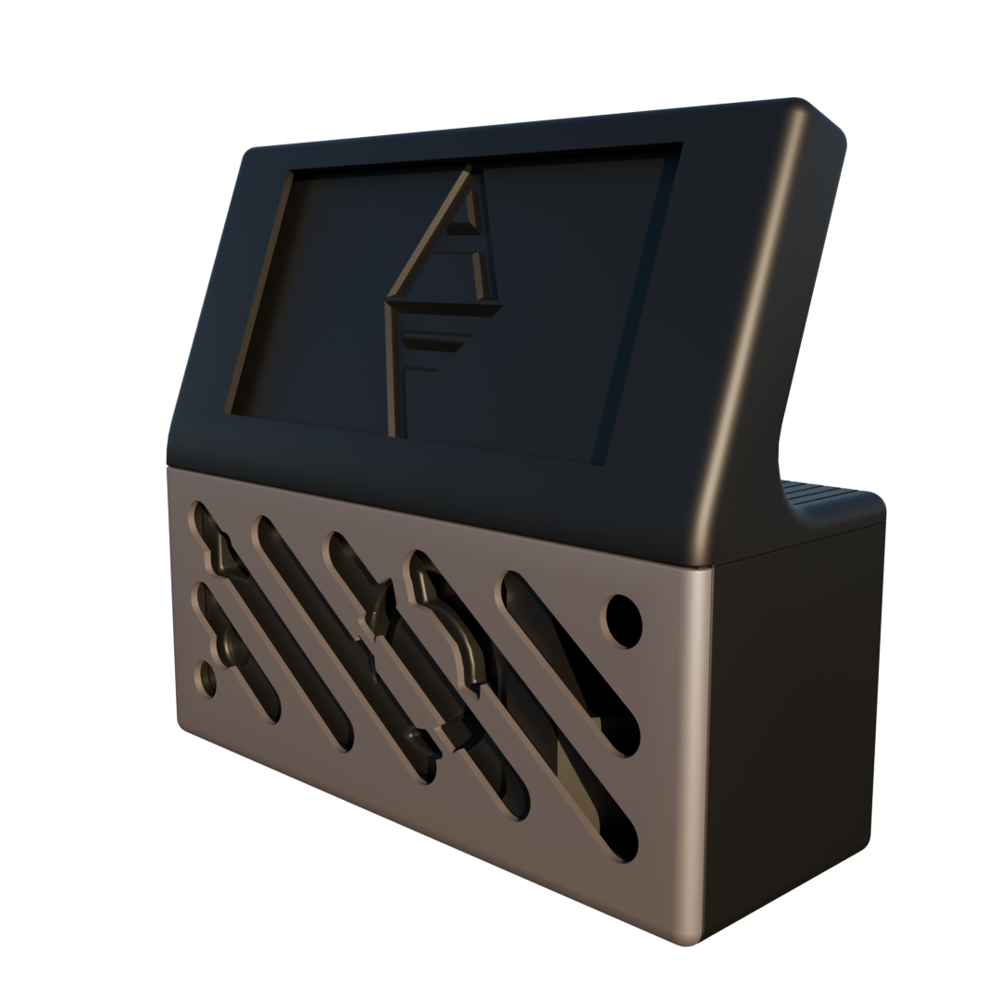
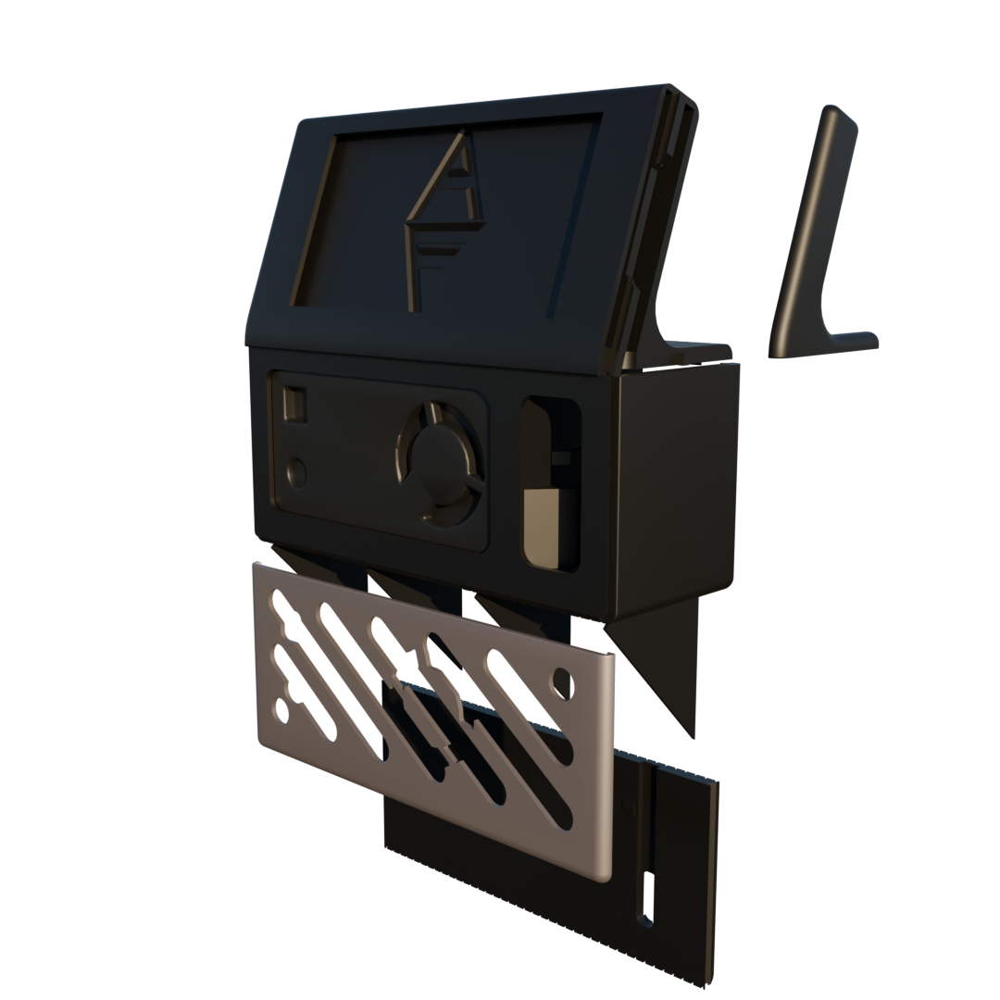
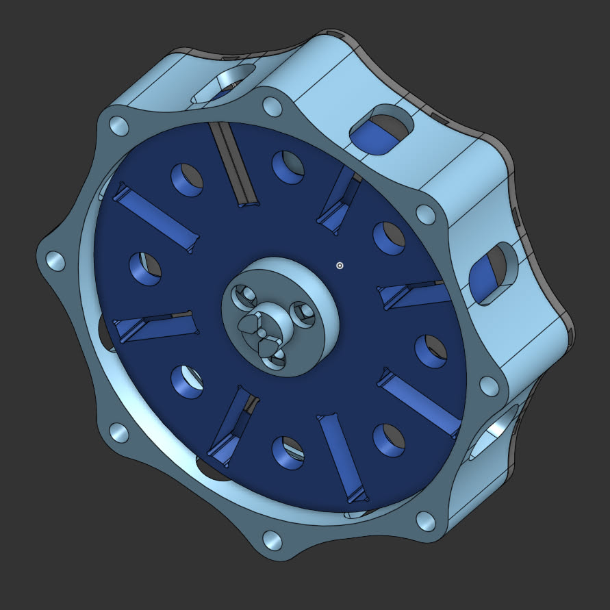
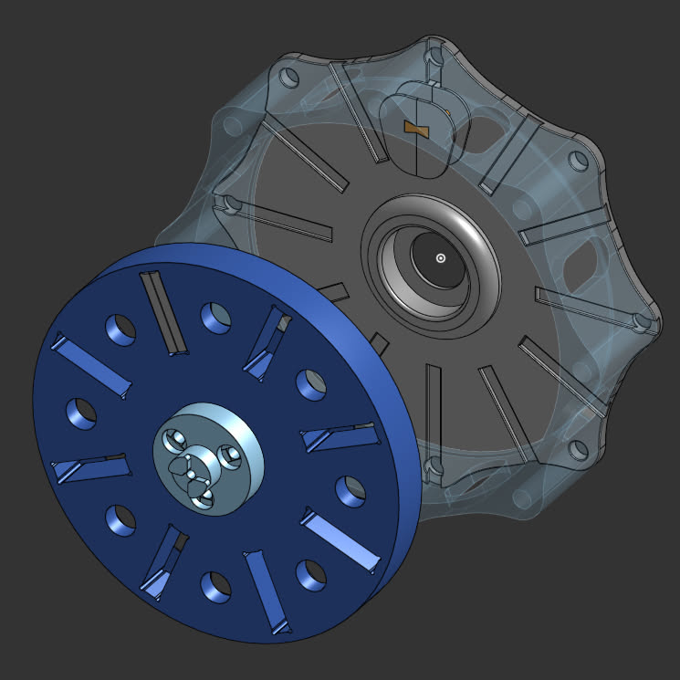

3-DOF Robotic Leg
Designed mechanics and coded inverse mechanics (Python)
Air Sensor
Designed code (C), Circuit (EPS32-C6), and housing (OnShape; 3D Printing)


Axial Flux Alternator
Designed 3D printed components


Up To Launch
Python script using an API (LL2) to fetch specific info on the next upcoming local rocket launch and displays it as a toast popup